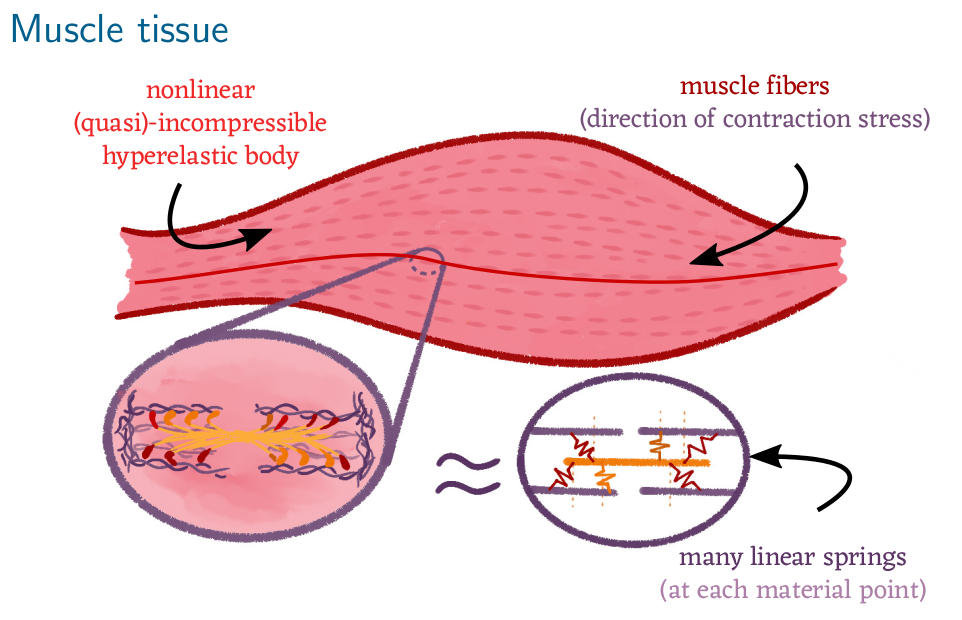
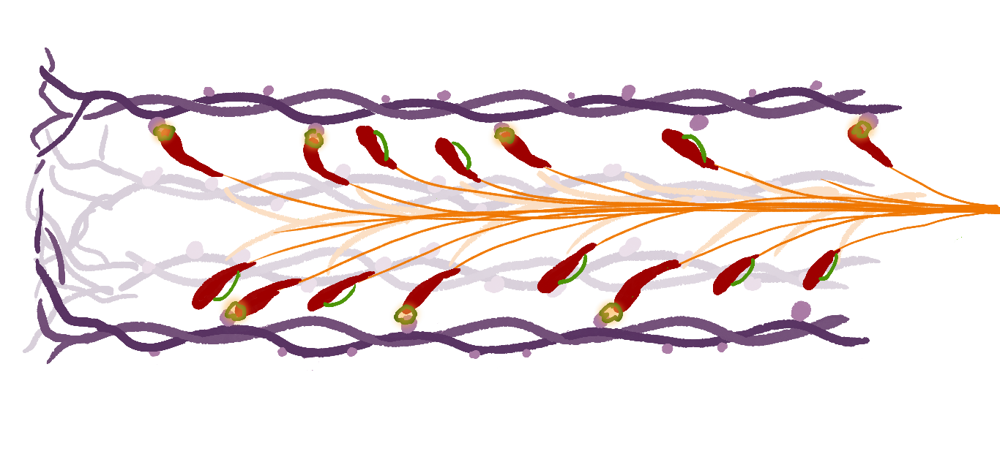

Very short project description:
Mean-field limit for constrained particles
This project is a collaboration with Bernd Simeon.
Publications:
- S. Plunder, B. Simeon, The mean-field limit for particle systems with uniform full-rank constraints. Kinetic and Related Models. (2023) DOI:10.3934/krm.2023012, arxiv.
- S. Plunder, B. Simeon, Coupled Systems of Linear Differential-Algebraic and Kinetic Equations with Application to the Mathematical Modelling of Muscle Tissue. (2020) In: Reis, T., Grundel, S., Schöps, S. (eds) Progress in Differential-Algebraic Equations II. Differential-Algebraic Equations Forum. Springer, Cham. DOI: 10.1007/978-3-030-53905-4_12, arxiv.
Motivation from muscle dyanmics
Skeletal muscle tissue is one of the best understood systems in biology: Muscles contract at a macroscopic scale because billions of small actin-myosin filaments contract on a molecular level. This theory is called the sliding filament theory and it is the foundation for many precise muscle dynamics models.

Figure 1: Sketch of a skeletal muscle which consists of many muscle fibres. Each muscle fibre is a bundle of muscle cells (myocytes) which in turn contain actin-myosin filaments. The filaments are arranged in parallel such that their individual constration force accumulates.
Figure 2: Illustration of an myosin filament (purple) with a parallel actin filament (orange) and attached actin heads (red). The molecular properties of the actin-myosin heads leads to micrscopic spring like contraction.Mathematical abstraction
As so often, the mathematical theory to describe the microscopic dynamics is well understood, but it is less trivial to truthfuly related the microscopic dynamics to the macroscopic behaviour of the muscle tissue. The reason is that the mathematical theory one typically would like to apply (kinetic theory) does not directly generalise in a complex system such as muscle tissues.
In this project, we study a abstract model inspired by sliding filament theory. An example of this abstract simplification is shown in the following figure:
 Figure 3: To simplify the mathematical analysis, we replace the muscle tissue
with a finite dimensional physical system (heavy system) and the attached actin-heads are now a large-scale ODE
for particle-like dynamics. Crucially, both systems are coupled with each other, which constitutes a new class of systems
for which kinetic theory is not well-studied yet.
Figure 3: To simplify the mathematical analysis, we replace the muscle tissue
with a finite dimensional physical system (heavy system) and the attached actin-heads are now a large-scale ODE
for particle-like dynamics. Crucially, both systems are coupled with each other, which constitutes a new class of systems
for which kinetic theory is not well-studied yet.
Mean-field convergence for constrained particles
For a detailed exposition, we refer to our publication, arxiv. Here, we show the main result in a illustrative setting.
The system in Figure 3 could be written as
A particular choice would be
The term
The question arises if in the limit
This is indeed the case and we proved this in our publication. Our result show that the mean-field limit is valid and the corresponding mean-field PDE is of the form
Explicit formulas for these terms are provided in our article.
In the example case of linear springs,
Outlook
Our results are in particular interesting for nonlinear constratins. This can happend for example when one consideres detailed molecular models for actin-myosin dynamics and effects such as shear-forces or rotation within muscles. The theory derived in this article can then provide a mathematically rooted framework to derive macroscopic models for muscle tissue.
However, there are critical limitations in our work. Most crucially, we only consider attached cross-bridges, whereas in reality the cross-bridges detach after contraction. This is a very interesting direction for future research as it requires additional theory to justify the mean-field limit in the presence of stochasticity.
[^1] Here, convergence is meant in the sense of weak convergence of probability measures, where we associate
the discrete distribution with the empirical measure